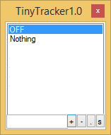

TinyTracker User Guide
TinyTracker is a small desktop time tracker that stays visible while you work.

Quick start
- Start TinyTracker from your Windows shortcut or by running
TinyTracker.exe. - Leave
OFFselected when you do not want to record time. - Select
Nothingwhen you want to record time before you decide which task it belongs to. - Type a task name and press
Enterto add it. - Press
Ctrl+Sto review your day in Summary. - Press
F1to change settings.
First things to know
- The task list always includes
OFFandNothing. - TinyTracker writes time into one CSV file per day.
- If your PC is locked while a task is active, TinyTracker records that time with
(Locked)added to the task name. - The window stays on top so you can switch tasks quickly.
Minimized view
Double-click the title bar or press Esc to switch between the full window and the minimized view.
Where to go next
- Use Main Window for day-to-day tracking.
- Use Summary to review one day or several days.
- Use Summary Calculator to group and round time for timesheets.
- Use Settings to change paths, colors, startup, and calculator options.